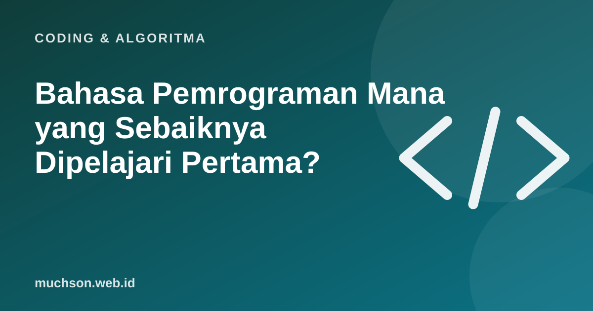

Beranda › Artikel › Coding & Algoritma
Coding & AlgoritmaBahasa Pemrograman Mana yang Sebaiknya Dipelajari Pertama?
Pertanyaan "bahasa apa yang terbaik?" bisa memicu perdebatan panjang di forum programmer. Jawaban jujurnya: tidak ada bahasa terbaik secara mutlak, yang ada bahasa yang paling cocok untuk tujuan Anda. Artikel ini membandingkan bahasa yang paling sering disarankan untuk pemula dan membantu Anda memilih.

Perbandingan singkat
| Bahasa | Paling banyak dipakai untuk | Kemudahan untuk pemula | Catatan |
|---|---|---|---|
| Python | Data, AI, otomasi, backend | Sangat ramah | Sintaks bersih, komunitas besar |
| JavaScript | Website (depan dan belakang), aplikasi | Ramah | Satu-satunya bahasa yang berjalan langsung di browser |
| Java | Aplikasi perusahaan, Android lama, backend | Sedang | Banyak dipakai di korporasi dan perbankan |
| PHP | Website, CMS seperti WordPress | Ramah | Masih banyak dipakai situs dan UMKM |
| Kotlin | Aplikasi Android modern | Sedang | Bahasa yang disarankan Google untuk Android |
| Go | Backend dan infrastruktur cloud | Sedang | Sederhana dan cepat, populer di startup |
Survei pengembang tahunan Stack Overflow secara konsisten menempatkan JavaScript dan Python di antara bahasa yang paling banyak dipakai. Keduanya adalah titik mulai yang sangat aman.
Pemilih bahasa pertama
Contoh kode yang sama di tiga bahasa
Program yang menyapa nama dan memeriksa umur:
Python
nama = input("Nama: ")
umur = int(input("Umur: "))
if umur >= 17:
print(f"Halo {nama}, kamu sudah boleh membuat KTP.")
else:
print(f"Halo {nama}, tunggu {17 - umur} tahun lagi.")JavaScript
const nama = prompt("Nama:");
const umur = Number(prompt("Umur:"));
if (umur >= 17) {
console.log(`Halo ${nama}, kamu sudah boleh membuat KTP.`);
} else {
console.log(`Halo ${nama}, tunggu ${17 - umur} tahun lagi.`);
}Java
import java.util.Scanner;
public class Halo {
public static void main(String[] args) {
Scanner in = new Scanner(System.in);
System.out.print("Nama: ");
String nama = in.nextLine();
System.out.print("Umur: ");
int umur = in.nextInt();
if (umur >= 17) {
System.out.println("Halo " + nama + ", kamu sudah boleh membuat KTP.");
} else {
System.out.println("Halo " + nama + ", tunggu " + (17 - umur) + " tahun lagi.");
}
}
}Perhatikan polanya
Logikanya identik: input, konversi angka, kondisi, output. Inilah alasan bahasa kedua jauh lebih mudah dipelajari daripada bahasa pertama.
Yang lebih penting daripada bahasanya
- Konsistensi. Satu jam setiap hari mengalahkan sepuluh jam di akhir bulan.
- Proyek. Bahasa apa pun, yang dilihat recruiter adalah apa yang sudah Anda buat.
- Dasar ilmu komputer. Struktur data, algoritma, cara kerja web dan database.
- Git dan kolaborasi. Hampir semua pekerjaan memakainya.
Tanya jawab
Bahasa pemrograman apa yang paling mudah untuk pemula?
Python umumnya dianggap paling ramah karena sintaksnya bersih dan mudah dibaca.
Python atau JavaScript dulu?
Python untuk data, AI, dan otomasi. JavaScript bila tujuan utama Anda membuat website.
Bahasa apa yang paling dicari perusahaan?
JavaScript, Python, dan Java termasuk yang paling banyak dipakai, tetapi kebutuhan berbeda per perusahaan dan bidang.
Apakah boleh belajar dua bahasa sekaligus?
Sebaiknya kuasai satu bahasa sampai bisa membuat proyek sendiri, baru menambah bahasa kedua.
Sumber dan bacaan lanjut
- Stack Overflow Developer Survey
- Python: tutorial resmi
- MDN: JavaScript Guide
- Android Developers: Kotlin